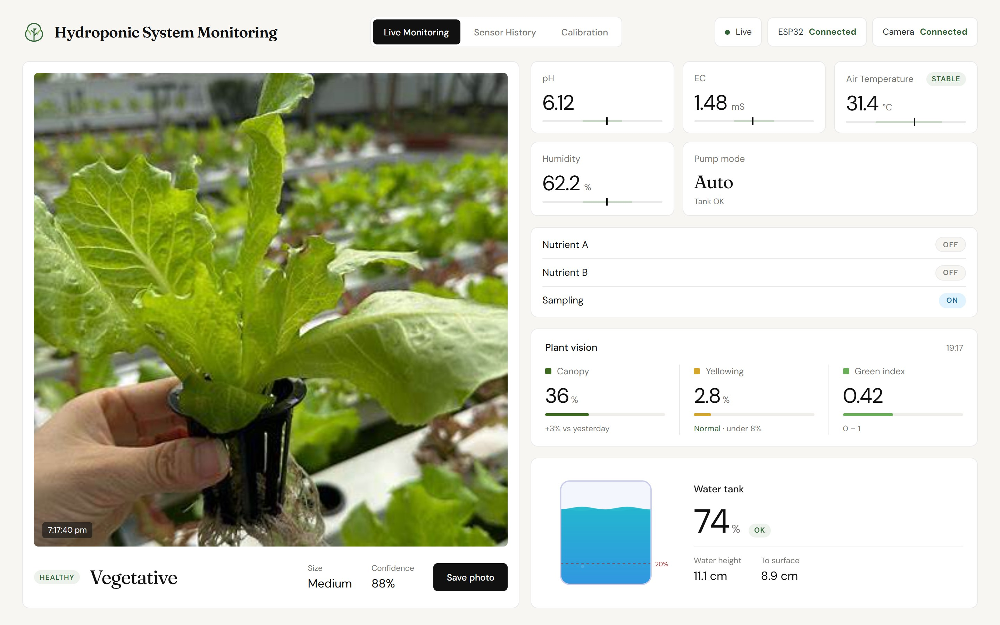

Introduction to a hydroponic lettuce system that measures its own water and air, doses nutrients by itself, watches the plants with a camera, and shows everything on an offline dashboard.

Live Monitoring tab of the dashboard (screenshot taken 13 Nov 2026 with simulated sensor data).
Hydroponic lettuce grows fast and clean, but only if the nutrient water stays in a narrow range. Checking it by hand every day is slow and easy to forget. This project lets the system check and correct itself.
| # | Objective | How it is met |
|---|---|---|
| 1 | Measure air temperature, humidity, EC, pH and water level continuously. | ESP32 with DHT22, EC, pH and ultrasonic sensors, one reading every 2 s |
| 2 | Keep EC and pH inside the lettuce target range automatically. | Pump A + Pump B auto control in the firmware |
| 3 | Protect the pumps from running dry. | Tank-low stop below 20 % water level |
| 4 | Record every reading for later analysis. | CSV session logs on the Raspberry Pi 5 |
| 5 | Check plant health and growth stage with a camera. | MaixCAM photos, leaf-colour check and an AI growth-stage model |
| 6 | Show live values, history and calibration on a dashboard, fully offline. | MQTT (Mosquitto) + web dashboard on port 8000, HDMI kiosk |
An ESP32 reads the sensors and drives the pumps. A Raspberry Pi 5 logs the data, runs the camera AI and serves the dashboard. They talk over a USB cable and a local MQTT broker. No Wi-Fi or internet is needed at runtime.
| Component | Role |
|---|---|
| ESP32 Dev Module | Reads all sensors, runs pump auto control and tank-low protection, sends one JSON line every 2 s over USB serial (115200 baud). |
| DHT22 | Air temperature and humidity (status band 25–36 °C). |
| EC sensor (EC V2.1) | Nutrient strength in mS/cm, two-point calibration (1413 µS/cm, 12.88 mS/cm). |
| pH sensor (PH-4502C) | Acidity of the nutrient water, two-point calibration (pH 7, pH 4). |
| HC-SR04 | Water level in the tank (cm and %), mounted above the water facing down. |
| 2 × 2-channel relay | Pump A (Nutrient A / Pump In), Pump B (Nutrient B / Pump Out), sampling pump (Pump N). |
| Raspberry Pi 5 | Serial → MQTT bridge, CSV logs, history API, camera vision, dashboard, HDMI kiosk. |
| Sipeed MaixCAM | Plant camera, connected to the Pi by USB-C as a network adapter; serves a photo every 10 s. |
Pump A and Pump B run until EC is 1.2–1.8 mS/cm and pH is 5.5–6.5, then stop. Start delay 60 s after boot.
All pumps are forced off when the water level is below 20 % (3 low readings in a row), in auto and manual mode.
Leaf-colour health check and a MobileNetV3 growth-stage model (86 % test accuracy, 10 ms per photo on the Pi 5).
Live tiles, 1 h / 24 h / 7 d history, CSV export and guided calibration. Shown full screen on the HDMI monitor at boot.
| Status | Item |
|---|---|
| Done | ESP32 firmware (DHT22, EC, pH, HC-SR04), pump auto control, tank-low stop, relay test |
| Done | USB serial → MQTT bridge, CSV session logs, history API, dashboard (3 tabs), HDMI kiosk |
| Done | MaixCAM camera, leaf-colour health check, 88-photo dataset, growth-stage model |
| Next | More own-camera photos and retrain · MQTT password · DS18B20 water temperature · grow-light relay · RTC battery |
docs/pdf/Hydro_System_Guide.pdf.